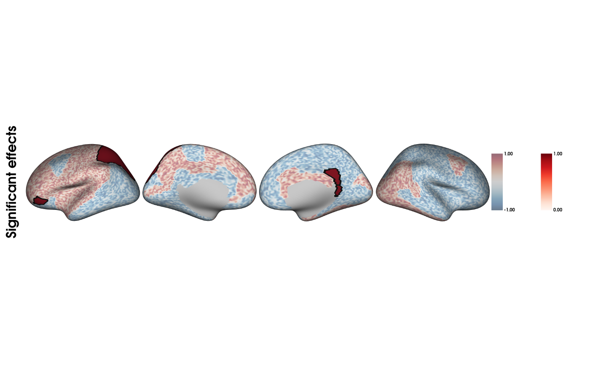

Surface overlay plotter
plot_overlay_surf.RdPlots surface data in a grid with one or multiple rows in a .png file
Usage
plot_overlay_surf(
model_output = NULL,
surf_data_1 = NULL,
surf_data_2 = NULL,
cmap_1,
cmap_2,
limits_1,
limits_2,
alpha_1 = 1,
alpha_2 = 1,
colorbar_1 = TRUE,
colorbar_2 = TRUE,
show_nan = TRUE,
filename,
title = "",
surface = "inflated",
overlay_boundaries = FALSE,
size,
zoom,
transparent_bg = FALSE,
show.plot.window = TRUE,
VWR_check = TRUE
)Arguments
- model_output
A list object outputted by RFT_vertex_analysis() or TFCE_threshold(). The 'tstat_map' will automatically be treated as background map, and the 'thresholded_tstat_map' as overlay map. See surf_data_1 or surf_data_2 to assign any map manually.
- surf_data_1
A numeric vector (length of V), where V is the number of vertices. It can be one row from the output from SURFvextract(), CAT12vextract(), FSLRvextract(), as well as masks or vertex-wise results outputted by analyses functions. This is the background surface.
- surf_data_2
Same as surf_data_1. This is the overlay surface.
- cmap_1
A string object specifying the name of an existing colormap or a vector of hexadecimal color codes to be used as a custom colormap. The names of existing colormaps are listed in the 'Matplotlib' plotting library.
Default cmap is set to
"Reds"for positive values,"Blues_r"for negative values and"RdBu"when both positive and negative values exist. This is meant for the background surface.- cmap_2
Same as cmap_1. This is meant for the overlay surface. Default is the same as cmaps_1, adapted to limits of surf_data_2.
- limits_1
A combined pair of numeric vector composed of the lower and upper color scale limits of surf_data_1. When left unspecified, the symmetrical limits c(-max(abs(surf_data_1),max(abs(surf_data_1))) will be used. If set to NULL, the limits will correspond to the min and max values of surf_data_1. This is meant for the background surface.
- limits_2
Same as limits_1, or also the string object "same". Default is symmetrical limits relative to surf_data_2, while 'same' will apply the exact same limits as for limits_1. This is meant for the overlay surface.
- alpha_1
A numeric object between 0 and 1 to determine the opacity of the non-empty vertices. Note that this is not a true opacity setting, it will blend the colour into that of the NaN vertices (white if show_nan is FALSE). This is meant for the background surface.
- alpha_2
Same as alpha_2. This is meant for the overlay surface. Default is the same as alpha_1.
- colorbar_1
A logical object stating whether to include the color bar for the background layer in the plot or not (default is TRUE).
- colorbar_2
A logical object stating whether to include the color bar for the overlay layer in the plot or not (default is TRUE).
- show_nan
A logical object to determine if the NaN vertices are to be plotted (Default is TRUE). This is meant for the background surface. The overlay surface will always omit NaN vertices to make the background visible.
- filename
A string object containing the desired name of the output .png. Default is 'combined_plots.png' in the R temporary directory (tempdir()).Only filenames with a .png extension are allowed.
- title
A string object for setting the title in the plot. Default is none. For titles that too long to be fully displayed within the plot, we recommend splitting them into multiple lines by inserting "\n".
- surface
A string object containing the name of the type of cortical surface background rendered. Possible options include "white", "smoothwm","pial" and "inflated" (default).
- overlay_boundaries
A logical object stating whether to plot black contour of the overlay layer.
- size
A combined pair of numeric vector indicating the image dimensions (width and height in pixels). Default is c(1700,400). Note that the size will depend on the inclusion of color bar(s), which will expand the width to ~5% per color bar.
- zoom
A numeric value for adjusting the level of zoom on the figures. Default is 1.25.
- transparent_bg
A logical object to determine if the background of the image is set to transparent (Default is FALSE).
- show.plot.window
A logical object to determine if the generated plot is to be shown within RStudio's plot window
- VWR_check
A boolean object specifying whether to check and validate system requirements. Default is TRUE.
Examples
#simulate t-map
background=rep(NA,20484);
ROImap_fs5 <- get('ROImap_fs5')
ROImap <- list(ROImap_fs5@data,ROImap_fs5@atlases)
neg_parts <- c(1:100)
idx_neg <- which(ROImap[[1]][,1] %in% neg_parts)
background[idx_neg]=runif(length(idx_neg),-1,0)
pos_parts <- c(18:46)
idx_pos <- which(ROImap[[1]][,1] %in% pos_parts)
background[idx_pos]=runif(length(idx_pos),0,1)
#simulate clusters (randomly picked aparc atlas parcels)
idx_sig=which(ROImap[[1]][,1]==29| ROImap[[1]][,1]==19|
ROImap[[1]][,1]==45)
overlay = rep(NA,20484);
overlay[idx_sig]=1
plot_overlay_surf(surf_data_1=background,
surf_data_2=overlay,
cmap_1='RdBu_r', cmap_2='Reds',
alpha_1=0.4, alpha_2=1,
filename=paste0(tempdir(),"/simulated_plot.png"),
title="Significant effects",
overlay_boundaries=TRUE,
VWR_check=FALSE)
